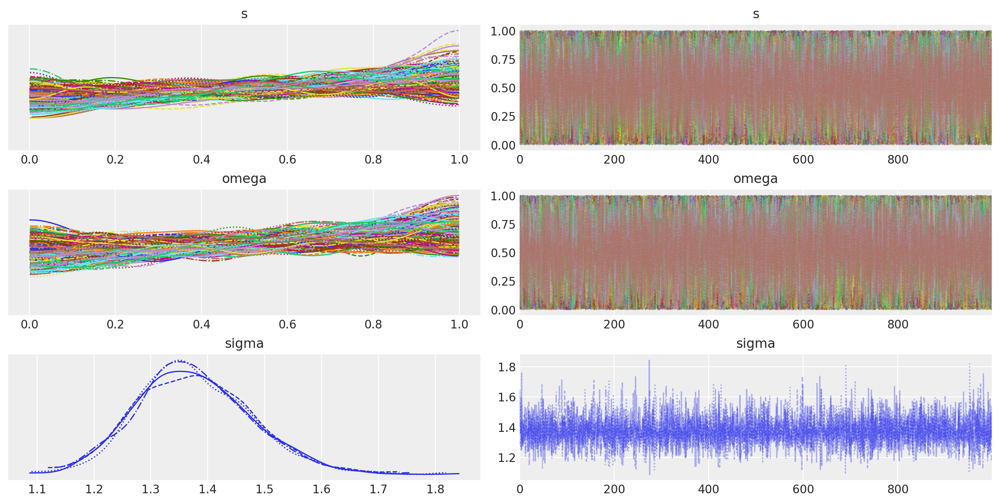
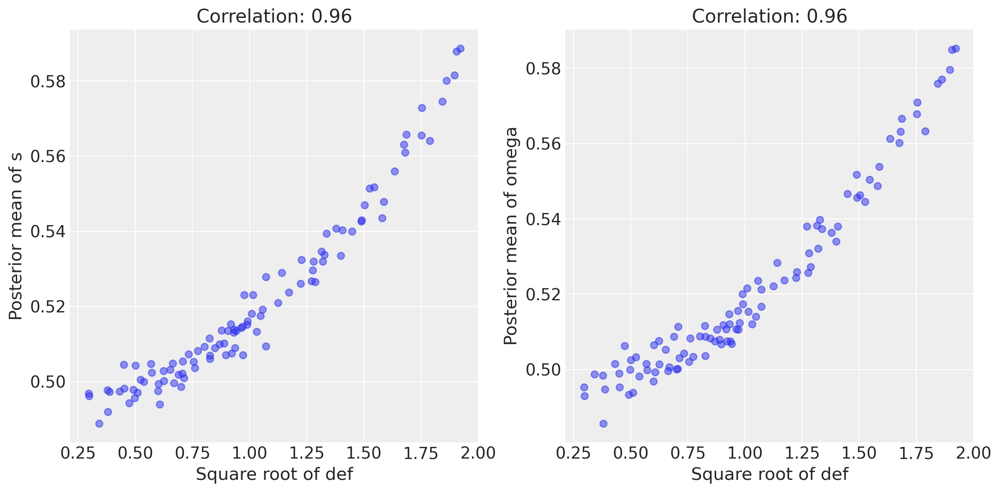

La percezione dell’inclinazione locale#
Preparazione del Notebook#
import os
import numpy as np
import pandas as pd
import matplotlib.pyplot as plt
import seaborn as sns
import scipy.stats as stats
import arviz as az
import warnings
from cmdstanpy import cmdstan_path, CmdStanModel
---------------------------------------------------------------------------
ModuleNotFoundError Traceback (most recent call last)
Cell In[1], line 9
7 import arviz as az
8 import warnings
----> 9 from cmdstanpy import cmdstan_path, CmdStanModel
ModuleNotFoundError: No module named 'cmdstanpy'
%config InlineBackend.figure_format = 'retina'
# Initialize random number generator
RANDOM_SEED = 8927
rng = np.random.default_rng(RANDOM_SEED)
az.style.use("arviz-darkgrid")
def scale_columns(dataframe, columns_to_scale):
# Work on a copy to avoid modifying the original DataFrame
df_scaled = dataframe.copy()
for column in columns_to_scale:
# Scale each specified column individually
df_scaled[column] = stats.zscore(df_scaled[column])
return df_scaled
Utilizzeremo il modello linear_regression.stan che può essere usato sia per la regressione bivariata sia per la regressione multipla. Il modello Stan assume che tutte le variabili, sia la \(y\) sia le \(X\) siano standardizzate. Sui parametri del modello (\(\alpha\), \(\beta\), \(\sigma\)) sono state imposte delle distribuzioni a priori debolmente informative.
stan_file = os.path.join('stan', 'def_model.stan')
with open(stan_file, 'r') as f:
print(f.read())
data {
int<lower=0> N; // Numero di misurazioni
vector[N] def; // Valori di deformazione
}
parameters {
vector<lower=0, upper=1>[N] s; // Slant per ogni misurazione
vector<lower=0, upper=1>[N] omega; // Velocità di rotazione locale per ogni misurazione
real<lower=0> sigma;
}
model {
// Priori
s ~ beta(1, 1);
omega ~ beta(1, 1);
// Likelihood
for (i in 1:N) {
def[i] ~ normal(s[i] * omega[i], sigma); // Assumendo una certa varianza sigma
}
}
Compiliamo il modello.
model = CmdStanModel(stan_file=stan_file)
print(model)
CmdStanModel: name=def_model
stan_file=/Users/corrado/_repositories/ds4p/chapter_5/stan/def_model.stan
exe_file=/Users/corrado/_repositories/ds4p/chapter_5/stan/def_model
compiler_options=stanc_options={}, cpp_options={}
N = 100
sigma_degress = np.random.uniform(10, 80, size=N)
sigma_radians = np.deg2rad(sigma_degress)
omega_degrees_per_second = np.random.uniform(0, 180, size=N)
omega_radians_per_second = np.deg2rad(omega_degrees_per_second)
def_values = sigma_radians * omega_radians_per_second
noise_std_dev = 0.1
def_values_perturbed = def_values + np.random.normal(0, noise_std_dev, def_values.shape)
I dati devono essere contenuti in un dizionario. Nel caso presente, il dizionario data può essere creato nel modo seguente.
stan_data = {
"N" : N,
"def" : def_values_perturbed
}
Eseguiamo il campionamento MCMC.
fit = model.sample(data=stan_data)
Show code cell output
04:34:30 - cmdstanpy - INFO - CmdStan start processing
chain 1 | | 00:00 Status
chain 1 |▉ | 00:00 Iteration: 1 / 2000 [ 0%] (Warmup)
chain 1 |█▎ | 00:00 Iteration: 100 / 2000 [ 5%] (Warmup)
chain 1 |██▎ | 00:00 Iteration: 300 / 2000 [ 15%] (Warmup)
chain 1 |███▏ | 00:00 Iteration: 500 / 2000 [ 25%] (Warmup)
chain 1 |████ | 00:01 Iteration: 700 / 2000 [ 35%] (Warmup)
chain 1 |█████ | 00:01 Iteration: 900 / 2000 [ 45%] (Warmup)
chain 1 |██████▎ | 00:01 Iteration: 1100 / 2000 [ 55%] (Sampling)
chain 1 |███████▎ | 00:01 Iteration: 1300 / 2000 [ 65%] (Sampling)
chain 1 |████████▏ | 00:01 Iteration: 1500 / 2000 [ 75%] (Sampling)
chain 1 |█████████ | 00:01 Iteration: 1700 / 2000 [ 85%] (Sampling)
chain 1 |██████████| 00:02 Sampling completed
chain 2 |██████████| 00:02 Sampling completed
chain 3 |██████████| 00:02 Sampling completed
chain 4 |██████████| 00:02 Sampling completed
04:34:33 - cmdstanpy - INFO - CmdStan done processing.
04:34:33 - cmdstanpy - WARNING - Non-fatal error during sampling:
Exception: normal_lpdf: Scale parameter is 0, but must be positive! (in 'def_model.stan', line 17, column 4 to column 44)
Consider re-running with show_console=True if the above output is unclear!
Esaminiamo i risultati ottenuti.
print(fit.summary())
Mean MCSE StdDev 5% 50% \
lp__ -480.709000 0.332513 11.266100 -499.946000 -480.083000
s[1] 0.503172 0.003074 0.284225 0.052270 0.505054
s[2] 0.513029 0.002997 0.290102 0.049899 0.528578
s[3] 0.507042 0.003267 0.290573 0.055712 0.507152
s[4] 0.501833 0.003202 0.281998 0.056235 0.501380
... ... ... ... ... ...
omega[97] 0.508248 0.003087 0.290695 0.048610 0.512774
omega[98] 0.566579 0.003232 0.279150 0.070278 0.599514
omega[99] 0.545647 0.003409 0.289952 0.061027 0.568823
omega[100] 0.500132 0.003123 0.282696 0.054051 0.499855
sigma 1.376423 0.001069 0.100749 1.222190 1.370130
95% N_Eff N_Eff/s R_hat
lp__ -463.063000 1147.960000 299.495000 1.004150
s[1] 0.944890 8551.240000 2230.950000 0.999972
s[2] 0.955064 9372.590000 2445.240000 0.999375
s[3] 0.957278 7910.770000 2063.860000 0.999593
s[4] 0.943881 7754.130000 2022.990000 1.000040
... ... ... ... ...
omega[97] 0.955864 8867.140000 2313.370000 0.999588
omega[98] 0.962126 7459.870000 1946.220000 0.999360
omega[99] 0.965804 7234.830000 1887.510000 0.999301
omega[100] 0.947609 8192.380000 2137.330000 0.999775
sigma 1.550530 8874.269707 2315.228204 0.999419
[202 rows x 9 columns]
print(fit.diagnose())
Processing csv files: /var/folders/cl/wwjrsxdd5tz7y9jr82nd5hrw0000gn/T/tmpgfh2vb39/def_modelmia92i6n/def_model-20240328043430_1.csv, /var/folders/cl/wwjrsxdd5tz7y9jr82nd5hrw0000gn/T/tmpgfh2vb39/def_modelmia92i6n/def_model-20240328043430_2.csv, /var/folders/cl/wwjrsxdd5tz7y9jr82nd5hrw0000gn/T/tmpgfh2vb39/def_modelmia92i6n/def_model-20240328043430_3.csv, /var/folders/cl/wwjrsxdd5tz7y9jr82nd5hrw0000gn/T/tmpgfh2vb39/def_modelmia92i6n/def_model-20240328043430_4.csv
Checking sampler transitions treedepth.
Treedepth satisfactory for all transitions.
Checking sampler transitions for divergences.
No divergent transitions found.
Checking E-BFMI - sampler transitions HMC potential energy.
E-BFMI satisfactory.
Effective sample size satisfactory.
Split R-hat values satisfactory all parameters.
Processing complete, no problems detected.
L’oggetto fit generato da cmdstanpy appartiene alla classe cmdstanpy.stanfit.mcmc.CmdStanMCMC. Questo oggetto è funzionalmente equivalente a un oggetto della classe InferenceData, permettendo quindi la sua manipolazione tramite le funzioni fornite da ArviZ.
az.summary(fit, var_names=(["s", "omega", "sigma"]), hdi_prob=0.95)
| mean | sd | hdi_2.5% | hdi_97.5% | mcse_mean | mcse_sd | ess_bulk | ess_tail | r_hat | |
|---|---|---|---|---|---|---|---|---|---|
| s[0] | 0.503 | 0.284 | 0.026 | 0.968 | 0.003 | 0.003 | 8599.0 | 2601.0 | 1.00 |
| s[1] | 0.513 | 0.290 | 0.037 | 0.983 | 0.003 | 0.002 | 9710.0 | 2597.0 | 1.00 |
| s[2] | 0.507 | 0.291 | 0.056 | 1.000 | 0.003 | 0.003 | 8540.0 | 2630.0 | 1.00 |
| s[3] | 0.502 | 0.282 | 0.015 | 0.953 | 0.003 | 0.003 | 8145.0 | 2823.0 | 1.00 |
| s[4] | 0.532 | 0.285 | 0.065 | 1.000 | 0.003 | 0.003 | 8030.0 | 2478.0 | 1.00 |
| ... | ... | ... | ... | ... | ... | ... | ... | ... | ... |
| omega[96] | 0.508 | 0.291 | 0.047 | 0.998 | 0.003 | 0.003 | 9034.0 | 2688.0 | 1.00 |
| omega[97] | 0.567 | 0.279 | 0.070 | 1.000 | 0.003 | 0.002 | 7845.0 | 2334.0 | 1.00 |
| omega[98] | 0.546 | 0.290 | 0.061 | 1.000 | 0.003 | 0.002 | 7825.0 | 2477.0 | 1.01 |
| omega[99] | 0.500 | 0.283 | 0.054 | 1.000 | 0.003 | 0.003 | 7864.0 | 2483.0 | 1.00 |
| sigma | 1.376 | 0.101 | 1.186 | 1.577 | 0.001 | 0.001 | 9516.0 | 3228.0 | 1.00 |
201 rows × 9 columns
_ = az.plot_trace(fit, var_names=(["s", "omega", "sigma"]))

s_samples = fit.stan_variable('s')
omega_samples = fit.stan_variable('omega')
sqrt_def = np.sqrt(def_values)
import matplotlib.pyplot as plt
# Calculate the posterior means
s_mean = np.mean(s_samples, axis=0)
omega_mean = np.mean(omega_samples, axis=0)
# Calculate correlations
cor_s = np.corrcoef(sqrt_def, s_mean)[0, 1]
cor_omega = np.corrcoef(sqrt_def, omega_mean)[0, 1]
# Plotting
plt.figure(figsize=(12, 6))
plt.subplot(1, 2, 1)
plt.scatter(sqrt_def, s_mean, alpha=0.5)
plt.xlabel('Square root of def')
plt.ylabel('Posterior mean of s')
plt.title(f'Correlation: {cor_s:.2f}')
plt.subplot(1, 2, 2)
plt.scatter(sqrt_def, omega_mean, alpha=0.5)
plt.xlabel('Square root of def')
plt.ylabel('Posterior mean of omega')
plt.title(f'Correlation: {cor_omega:.2f}')
plt.tight_layout()
plt.show()
/var/folders/cl/wwjrsxdd5tz7y9jr82nd5hrw0000gn/T/ipykernel_33397/3780119552.py:26: UserWarning: The figure layout has changed to tight
plt.tight_layout()
